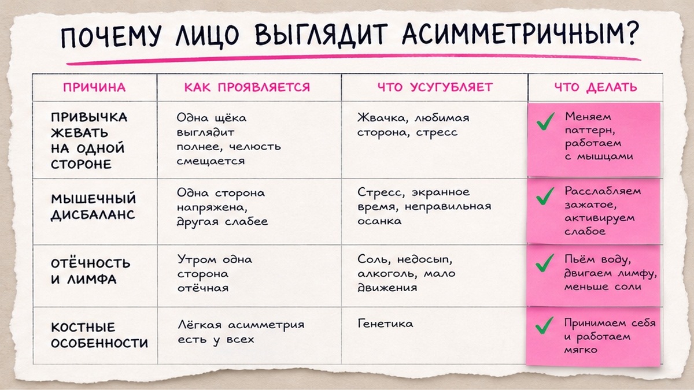
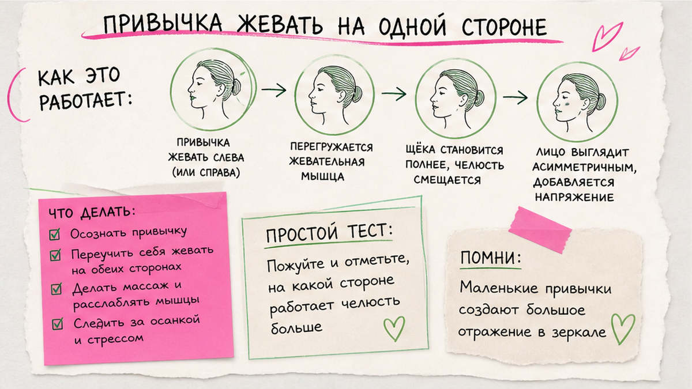
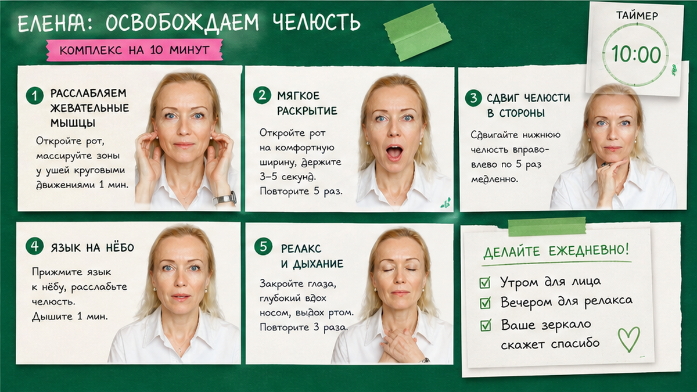

Асимметрия лица чаще всего связана не с «кривым черепом», а с привычками: жевать на одной стороне, спать на одном боку, держать телефон одной рукой, сутулиться. Дома помогают мягкие асимметрия лица упражнения, баланс жевания и короткая самопроверка у зеркала - обычно первые изменения ощущаются через 2-3 недели, не за три дня.
Лицо редко бывает идеально симметричным - и это нормально. Но когда одна сторона «тяжелее», чаще виноваты жевательная привычка, осанка и сон на одном боку. Мягкие упражнения и смена привычек обычно дают первый результат через 2-3 недели.
Ниже - без страшилок и без обещаний «ровное лицо за неделю»: почему одна щека или скула кажутся больше, как жевание на одной стороне меняет овал, и что можно сделать дома пошагово.
Ко мне часто приходят с фразой: «Одна половина лица будто другая».
Или: «На фото видно, что одна скула выше. А в жизни я этого не замечала».
Иногда женщина уже годами жуёт только справа.
Или спит только на левом боку.
Или весь день держит телефон между плечом и ухом.
Кожа и мышцы привыкают к одному сценарию.
И зеркало начинает показывать то, что тело давно «тренировало».
Хорошая новость: в большинстве бытовых случаев это не приговор.
Это сигнал о привычках.
И привычки можно менять - мягко, без боли, без «ломать лицо».

Асимметрия - это когда одна половина лица визуально отличается от другой.
Щека кажется полнее.
Скула - ниже или выше.
Угол рта - чуть смещён.
Глаз на одной стороне «уставший» к вечеру.
Многие пугаются слова «асимметрия».
Как будто речь о патологии.
На самом деле абсолютная симметрия - редкость.
Даже у моделей на профессиональных фото одна сторона чуть активнее.
Вопрос не в идеале.
Вопрос - насколько разница мешает вам в зеркале и растёт ли она со временем.
Механизм. Лицо - это мышцы, фасции, жевательные группы, положение головы и шеи, лимфа и привычный тонус.
Когда одна сторона работает больше, она становится «сильнее» и визуально массивнее.
Когда другая сторона расслаблена или «спит» годами, она кажется мягче и ниже.
Лимфа - это внутренняя «прокачка» тканей.
Если голова постоянно наклонена или шея зажата, отток хуже - и одна сторона к вечеру отекает сильнее.
Отсюда ощущение: утром лицо ровнее, к вечеру «уплывает» в одну сторону.
Если параллельно у вас компьютерная шея, голова смещается вперёд - и асимметрия часто усиливается не потому что «лицо кривое», а потому что шея и челюсть живут в одном наклоне.
❌ Что обычно усугубляет визуальную разницу:
✅ Что обычно помогает заметить первые сдвиги:
💡 Асимметрия часто усиливается к вечеру из-за отёка и привычного наклона головы - не потому что «лицо за ночь испортилось».

Жевательные мышцы - одна из самых сильных групп на лице.
Они работают каждый день.
Даже если вы «мало едите», вы жуёте, разговариваете, сжимаете челюсть при стрессе.
Когда основная нагрузка идёт на правую сторону, правая жевательная группа получает больше тренировки.
Мышца становится плотнее.
Кость и мягкие ткани вокруг привыкают к этому объёму.
Левая сторона в этот момент работает меньше.
Она может казаться «провисшей» или менее выразительной.
Это не про то, что одна сторона «плохая».
Это про дисбаланс нагрузки.
Как у спортсмена одна рука чуть сильнее, если он годами бил мяч одной.
Стоматология. Иногда женщины жуют на одной стороне, потому что с другой болит зуб или стоит коронка.
Это разумная защита.
Но если так живёте месяцами, лицо подстраивается под новую схему.
Сначала стоит очный осмотр у стоматолога - не «для красоты», а чтобы понять, можно ли безопасно вернуть нагрузку на обе стороны.
Стресс. Отдельная история - дневное сжатие зубов без еды.
Челюсть «замораживается».
Жевательные перегружаются с обеих сторон, но часто сильнее там, где привычка уже была активнее.
Тогда асимметрия смешивается с отёком и усталостью.
Если челюсть каменная к вечеру - начните с мягкого расслабления лица, а не с «силовых» упражнений.
Язык. Положение языка влияет на овал и подбородок.
Если язык «падает» вниз, подбородок визуально тяжелеет с одной стороны сильнее.
Тема языка и второго подбородка у меня разобрана отдельно - здесь - и она часто идёт рядом с асимметрией, а не вместо неё.
Жевание. Простое правило на каждый день: если заметили, что снова жуёте только справа - переключитесь на левую на 5-10 жевательных движений.
Без насилия.
Без «пережевать весь обед левой стороной за один раз».
Маленькими порциями в течение дня.
Сон. Если вы годами спите на одном боку, щека получает давление подушки и может казаться приплюснутой или отёчной с этой стороны.
Не обязательно сразу переучиваться на спину.
Иногда достаточно сменить высоту подушки или хотя бы иногда ложиться на другой бок.
Телефон. Разговор «плечом к уху» или постоянный наклон головы в одну сторону за экраном - ещё один тихий усилитель асимметрии.
Здесь пересекается тема осанки и шеи - без выравнивания головы упражнения на лицо дают меньше, чем вы ждёте.
Не нужен дорогой прибор.
Нужны зеркало, дневной свет и честность без паники.
Шаг 1. Свет. Встаньте у окна лицом к свету. Без жёлтой лампы сверху - она «рисует» тени и обманывает.
Шаг 2. Фронт. Расслабьте лицо. Сомкните губы мягко. Сфотографируйте или просто посмотрите: одна щека полнее? один угол рта ниже?
Шаг 3. Профиль. Повернитесь вправо и влево. Сравните линию подбородка, угол челюсти, «тяжесть» нижней трети.
Шаг 4. Улыбка. Лёгкая улыбка без натяжения. Часто асимметрия проявляется сильнее в движении, чем в покое.
Шаг 5. Вечер. Повторите ту же проверку вечером. Если разница между утром и вечером большая - добавьте работу с отёком и положением головы, не только «упражнения на симметрию».
Запишите одну фразу в заметки: «Сильнее сторона - …», «Больше отёк к вечеру - …».
Это ваш baseline, не приговор.
Фото. Не делайте 20 снимков подряд с разным наклоном головы - выберите один ракурс и возвращайтесь к нему раз в две недели.
Так проще увидеть реальный сдвиг, а не игру света и фильтров.
Если после самопроверки остаётся тревога - сохраните фото и покажите стоматологу или косметологу с медицинским образованием, не блогеру с «чудо-методикой».
Если хотите понять, не маскирует ли сухая или реактивная кожа картину - пройдите диагностику типа кожи: иногда «неровность» - это стянутость и шелушение, а не мышцы.

Ниже - мягкий план.
Не «выравнивание лицом в стену».
Не 40 повторов «для эффекта».
Три блока, которые можно делать дома.
Блок 1. Разгрузка жевательных (каждый день, 2-3 минуты)
Блок 2. Баланс жевания (в течение дня)
Завтрак и обед. Осознанно начните с «слабой» стороны - 10-15 жевательных движений, потом вернитесь к привычной схеме.
Перекусы. Если жуёте орехи или твёрдую пищу - делите порцию пополам между сторонами.
Стресс. Когда ловите сжатие зубов - разожмите, язык к нёбу, 20 секунд.
Блок 3. Положение головы (5 минут, 4-5 раз в неделю)
Миниплан на две недели.
Дни 1-14: блок 1 каждое утро, 2-3 минуты.
Каждый приём пищи: 10-15 жевательных движений на «слабой» стороне в начале.
Дни 3-14: блок 3 через день, 5-7 повторов tuck.
День 1 и день 14: одно фото фронт + профиль в одном свете, без фильтров.
Вечером: без телефона, прижатого плечом к уху, 30 минут подряд.
Реалистичный срок: ощущение «лицо легче» - часто 10-14 дней. Визуальный сдвиг контура - обычно 3-4 недели при стабильных привычках.
На сухой коже при самомассаже - капля крема для скольжения.
Подбор активной фазы - через индивидуальный уход, а не «универсальный анти-age на всех».
После блоков. Лёгкая усталость в жевательных в первые дни - нормальна.
Боль, щёлчок в суставе, онемение губы или щеки - стоп и очный осмотр.
Лицо не терпит героизма.
Оно терпит спокойную регулярность - по чуть-чуть, но каждый день.
Техники простые.
Ошибки - тоже.
| Ошибка | Что происходит | Как исправить |
|---|---|---|
| Жевать всю неделю только «слабой» стороной | Перегрузка с другой стороны, боль в суставе | Чередовать порциями, 10-15 движений за приём пищи |
| Силовой массаж щеки «до синяка» | Отёк, воспаление, асимметрия на фото хуже | Мягкие круги 30 сек, без боли |
| Игнорировать боль в челюсти | Риск проблем с ВНЧС | Стоп, стоматолог / челюстной врач |
| Сравнивать селфи с разным светом | Кажется, что «ничего не работает» | Один ракурс, дневной свет, раз в 2 недели |
| Только упражнения, без сна и жевания | Лицо возвращается к старой схеме | Сон на спине или смена подушки, баланс жевания |
Сделайте: фиксируйте привычки (на какой стороне жуёте, как спите). Не делайте: резкие «выравнивающие» движения 30 раз подряд.
У асимметрии нет одной волшебной кнопки. Жевание, сон, шея и стресс работают вместе - и именно поэтому мягкий план на две недели обычно честнее, чем «упражнение на симметрию за 3 дня».
Полную зеркальную симметрию ждать не стоит - она и не нужна. Но уменьшить заметную разницу между сторонами, отёк и «тяжесть» одной щеки - реально при работе с жеванием, осанкой и мягкими упражнениями.
Ощущение легче в лице - часто 10-14 дней. Визуальные изменения на фото в одном свете - обычно 3-4 недели. Быстрее обычно не бывает без филлеров и операций - и мы их здесь не обсуждаем.
Сначала стоматолог. Пока есть боль или нельзя нагружать сторону - не «ломайте» челюсть упражнениями. Работайте с другой стороной мягко и с положением головы.
Частично - за счёт тонуса, привычек и отёка. Если разница выраженная и давняя, очный осмотр (стоматолог, ортодонт, при необходимости челюстной специалист) честнее, чем обещания из блога.
Часто да. Голова вперёд и наклон в одну сторону за экраном усиливают визуальную разницу к вечеру. Имеет смысл параллельно править эргономику стола.
Можно, но если спите всегда на одной стороне, лицо «запоминает» давление подушки. Попробуйте чередовать или мягкую подушку поменьше - без фанатизма.
На сухой коже - да, для скольжения пальцев. Активную фазу подбирайте под тип кожи, иначе массаж даст стянутость вместо свежести.
Блок 1 (разгрузка жевательных) + осознанно 10 жевательных движений на «слабой» стороне за обедом. Этого достаточно для первого дня - без попытки «догнать всё сразу».
Достоверность: материал основан на практике Елены Шимановской в фейс-йоге. Не медицинская рекомендация. При боли в челюсти, щёлчках, онемении, головокружении - сначала очный осмотр врача.
🔥 Мой Telegram-канал «Silver Cream»
❓ На какой стороне вы чаще жуёте? Замечаете ли, что к вечеру одна щека «тяжелее»? Что уже пробовали - упражнения, массаж, смена подушки? Напишите в комментариях ⤵️